Waiver-Level Extraction: ADK Mode and Pipeline Mode
A step-by-step guide: from installing the tool to extracting, reviewing and saving waiver data
IMPORTANT: THIS TOOL NEEDS GOOGLE CLOUD CREDITS OR A BILLING ACCOUNT.Every extraction sends the waiver PDF to a Gemini model on your Google Cloud project, and that usage is charged to the project's billing account. Make sure billing is enabled, or that you have free credits, before your first run. See section 2.2.
Covers: the waiver-level app (waiver_level_extraction_agent), used through the ADK web interface (ADK mode) and from the command line (pipeline mode). Service-level extraction has its own guide.
Tested with: macOS, Python 3.12, Google ADK 2.0.0, Gemini 3.7 Flash, Google Chrome. Not tested on Windows.
Guide written: October 19, 2026
Updated: November 1, 2026
Table of contents
1. What this tool does
1915(c) Home and Community-Based Services (HCBS) waiver applications are long PDF documents (the example used in this guide, waiver PA0324R0600 from Pennsylvania, is 125 pages, which is on the smaller side: the 267 waivers in the project's collection range from about 119 to 610 pages, with a median of about 249). This tool reads one waiver PDF and fills in a standard list of 163 fields (for example the state, the waiver title, level of care, participant direction, financial eligibility and quality improvement items).
The 163 fields are defined in a layout file, waiver_level_extraction_agent/data/layouts/layout_waiver_overview.json. For each field it holds the section of the waiver where the field appears, whether the value is usually in a table, and a short description of what to extract. The tool is built for the standard 1915(c) waiver application and this list of fields; using it for other kinds of documents or other field lists is outside what this guide covers.
For every field it fills in, the tool also shows where it found the answer: the PDF page number and the exact wording from the document. You review each result and decide what is kept. Section 7.2 explains when the results spreadsheet is written.
1.1 The two ways to use the tool (both covered here)
Mode
What it is
Best for
ADK mode (this guide)
A chat window in your web browser. You type plain-English requests and the tool answers, one waiver at a time.
Reviewing a waiver, fixing individual fields, extracting an extra value that is not on the standard list.
Pipeline mode (section 9)
Commands typed in a terminal that process one waiver or many waivers in a row, with no chat and no review step.
Large batches, where you check the results afterwards.
1.2 What this guide covers, and what it does not
Covered: setting up, starting the app, extracting one waiver, reading and correcting the review table, saving to the results CSV, extracting a custom value, and running the same extraction from the command line (pipeline mode).
Not covered: service-level extraction (services, provider qualifications, rate methods). That is a different app, services_extraction_agent, with its own guide.
2. Before you start
2.1 What you need
Item
Details
A computer
macOS was used for everything in this guide. Linux commands are given but were not run. This project has not been tested on Windows (see the warning below).
Python 3.10 or newer
Check with python3 --version. This guide was tested with Python 3.12.
A personal Google account
Your own account, with your own Google Cloud project (see the note on institutional accounts below).
A Google Cloud project with billing
See 2.2 below. You will need the project's ID.
Google Chrome (recommended)
The chat window runs in a web browser. Chrome was used for every screenshot here.
The project folder
The code, plus the waiver PDFs you want to process.
poppler
A small system tool used to read PDF page images. Installed in section 3.4.
Not tested on a Windows laptopEverything in this guide was run and checked on macOS. The commands and behaviour on Windows have not been tested, so some steps may fail or need changes. Windows alternatives are shown in places but are untested. If you use Windows, consider Windows Subsystem for Linux (WSL), and expect to troubleshoot.
Work, school or institutional Google accountsIf you sign in with an account from an organization, the organization may restrict what you can do. You may need an administrator to give you access to a project, enable billing, or enable specific APIs (such as Vertex AI). Those steps are not covered in this guide. The guide assumes you run the extraction in your own Google account and your own Google Cloud project.
2.2 Credits and billing
THESE TOOLS NEED CREDITS. EXTRACTION IS NOT FREE.Each extraction makes many calls to Google's Gemini models through Vertex AI, and Google charges for them. The charges go to the billing account attached to your Google Cloud project. If billing is not enabled, or your credits have run out, extraction will fail.
According to Google's documentation, new Google Cloud customers can receive free trial credit ($300, valid for 90 days at the time of writing). The trial ends when the credit is used up or 90 days pass, whichever is first. Check Google's page for the current terms.
Vertex AI setup requires billing to be enabled on the project.
Prices change. Check the live pricing page before large runs:cloud.google.com/vertex-ai/pricing. This guide does not quote dollar prices because they would go out of date.
How much one waiver costs depends on its length and on how many fields need a second look. A full extraction of the 125-page test waiver took about 6 minutes and many model calls; a single custom value took about 20 to 30 seconds and one call.
Watch your spend in the Google Cloud console under Billing, and consider setting a budget alert there.
Google's own instructions for this: Set up a project and a development environment (docs.cloud.google.com/vertex-ai/docs/start/cloud-environment) and the Billing questions page for Vertex AI. See Appendix B for links.
3. Install and set up
You only do this section once per computer. Commands are shown for macOS and Linux. Type them in the Terminal app. Lines starting with # are comments and are not typed.
Prefer to have an AI assistant help?If you already work with an AI assistant, Appendix E has a ready-to-paste prompt that walks it through this setup safely.
3.1 Get the project folder
# Download the project (replace the address with your repository's address)
git clone <repository-url> 1915c_extraction_agent
cd 1915c_extraction_agent
All later commands are run from inside this folder, called the project root. It contains run_pipeline.py, waiver_level_extraction_agent/, services_extraction_agent/ and data/.
3.2 Create a private Python environment
python3 -m venv .venv
source .venv/bin/activate # macOS / Linux
# Windows PowerShell: .venv\Scripts\Activate.ps1
When the environment is active, your terminal prompt starts with (.venv). You must activate it again each time you open a new terminal.
This installs the ADK itself (pinned to version 2.0.0, the version this guide's screenshots come from), the Google cloud libraries, and the PDF-reading libraries. It takes a few minutes.
3.4 Install poppler
System
Command
macOS (Homebrew)
brew install poppler
Ubuntu / Debian
sudo apt install poppler-utils
Windows
Download a poppler build, unzip it, and add its bin folder to your PATH.
3.5 Install the Google Cloud command-line tool and sign in
Install the gcloud CLI from Google's page: cloud.google.com/sdk/docs/install.
Sign in so that the tool can use your Google account. This sets up Application Default Credentials (ADC):
gcloud auth application-default login
A browser window opens. Choose your Google account and allow access. When it finishes, the terminal confirms where the credentials file was saved.
Do not set the GOOGLE_APPLICATION_CREDENTIALS variable. Google's documentation says that variable overrides the credentials you just created.
3.6 Find your Google Cloud project ID, enable billing and turn on Vertex AI
Open the Google Cloud console (console.cloud.google.com) and sign in.
Click the project picker at the top of the page and choose your project. The project's name, number and ID are shown on the console's Welcome page, and also on the Home page under "Project info".
Copy the ID, not the name and not the number. A project ID is made of lowercase letters, numbers and hyphens, for example my-waiver-project-123456. It can be chosen when the project is created and cannot be changed afterwards.
Make sure billing is enabled for this project (see 2.2). If you use an organization's account, an administrator may have to do this for you; that case is not covered here.
Turn on the Vertex AI API for the project, either in the console's API library or with:
These two lines must be the same valuePROJECT_ID is read by the batch scripts and GOOGLE_CLOUD_PROJECT is read by the ADK web app. If they differ, or if you leave the placeholder your-project-id, the tool stops at start-up and prints a message telling you what to fix. If only one is set, the tool copies it to the other.
Everything else in the file can stay as it is. Appendix A explains each setting. Never email, upload or commit your .env file.
4. Start the app and open it in your browser
4.1 Start it
In a terminal opened in the project root, with the environment active (the prompt starts with (.venv)):
adk web . --port 8000
Wait until the terminal prints a line like Uvicorn running on http://127.0.0.1:8000. Leave this terminal window open. The app stops if you close it. The terminal also prints a running log, which is the first place to look if something seems stuck.
4.2 Open the page
Open Google Chrome and go to http://127.0.0.1:8000. You will see the ADK welcome page (Figure 1). This page exists only on your own computer; no one else can open it.
The ADK welcome page, before any app is selected.
4.3 Choose the waiver app
Click Select an app at the top left. A list of apps appears (Figure 2). Choose waiver_level_extraction_agent.
The app list. Choose waiver_level_extraction_agent. The entry called "data" is just the data folder and can be ignored.
Other entries in the listservices_extraction_agent is the service-level app (its own guide). analytics_agent answers questions about past runs. data is not an app.
4.4 Stop the app
Click in the terminal window and press Ctrl+C. Your saved results are not affected.
5. A tour of the screen
After choosing the waiver app you see an empty chat (Figure 3).
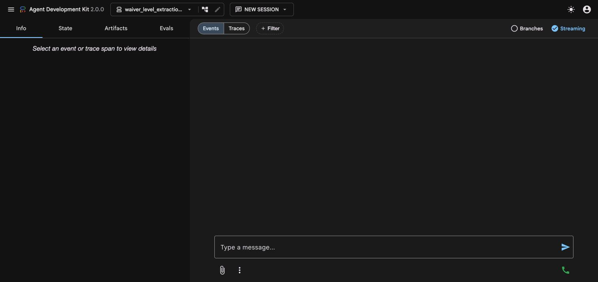
The waiver app, ready for your first message.
Part of the screen
What it does
Message box (bottom)
Type your request and press Enter. Everything is plain English.
New Session (top)
Starts a fresh conversation. Use this when you move to a different waiver. Results already saved to files are not lost.
Events / Traces (top of the chat)
Events shows the conversation and each step the tool takes (grey tool-call chips). Traces shows how long each step took (see 5.1).
Info, State, Artifacts, Evals tabs (left)
Info shows details of whichever event you click. State shows the data the session is holding in memory (see the note below). Artifacts and Evals are ADK developer features that this tool does not use; you can ignore them.
5.1 Checking what happened: the Traces view
Click Traces to see each model call and how long it took (Figure 4). This is useful when a step feels slow, and for seeing exactly how many model calls a request made, which is the number that drives cost.
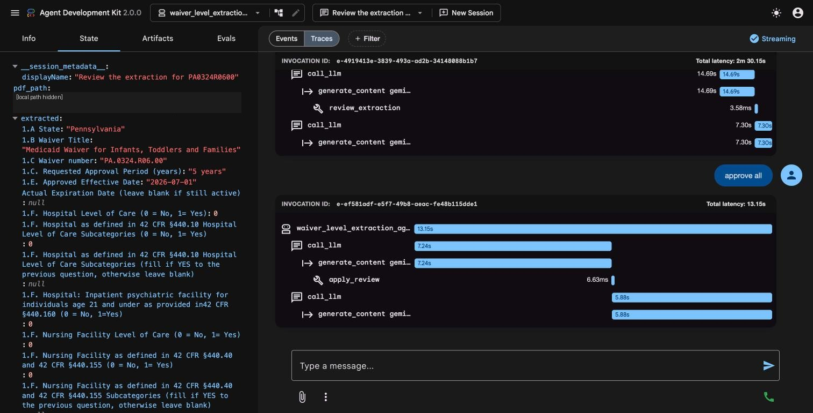
The Traces view. Each blue bar is one step; "call_llm" lines are calls to the Gemini model.
The State tab shows file paths from your computerThe State tab lists the extracted fields and also the full location of the PDF on your computer. Keep that in mind before sharing a screenshot of it.
5.2 Ask the tool what it can do
Type Hi, what can you do? The tool replies with a summary (Figures 5 and 6). It confirms that it works with the 163 fields in the layout file.
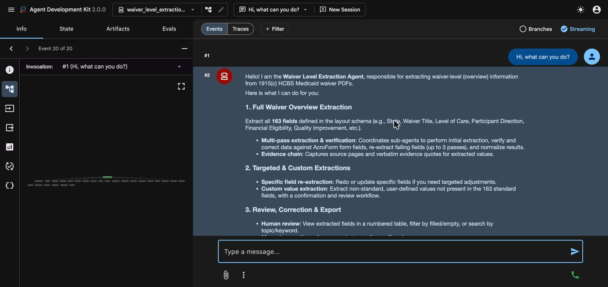
The first part of the reply.
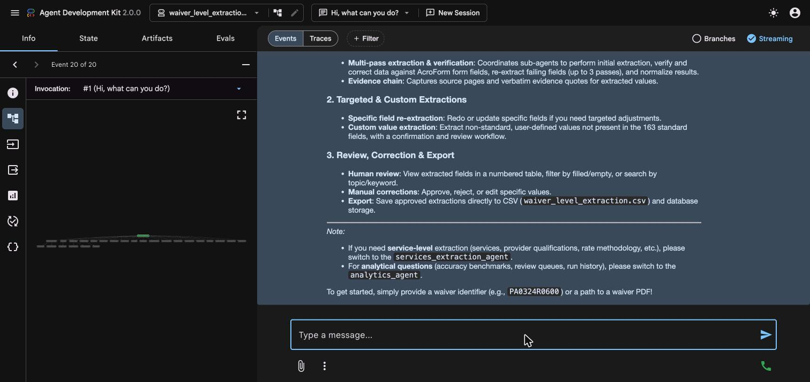
The rest of the reply, including how to get started.
6. Extract a waiver
6.1 Tell the tool which waiver
You can identify the waiver in three ways:
By waiver key, for example Extract PA0324R0600. The tool looks for the PDF in the default PDF folder (data/pdfs_267_latest).
By path to a PDF file, anywhere on your computer.
By path to a folder of PDFs, when you want the tool to list what is there.
Waiver keys look like PA0324R0600: the state code, a number, and the revision.
Starting a new session for each waiverClick New Session before starting a different waiver, so values from the previous waiver cannot get mixed in.
6.2 Watch it work
Type Extract PA0324R0600 and press Enter. The tool hands the job through a series of specialist steps. You can watch them appear as grey chips in the chat (Figures 7 and 8):
Step (tool name)
What it does
prepare_waiver
Opens the PDF and works out which check boxes on the form are ticked.
extract_overview_fields
Asks the Gemini model to fill in all 163 fields from the whole document. This is the longest single step (about 100 seconds for the 125-page test waiver).
critique_overview (critic)
A second pass that checks the answers against the quoted evidence and, where the PDF has form data, against that data, and flags fields that look wrong.
Re-extraction (only if needed)
Re-reads fields the critic flagged, up to two more times.
Normalisation and finalize_waiver
Tidies values (for example turns "Yes/No" boxes into 1 or 0) and saves the result files.
review_extraction
Builds the review table you will check.
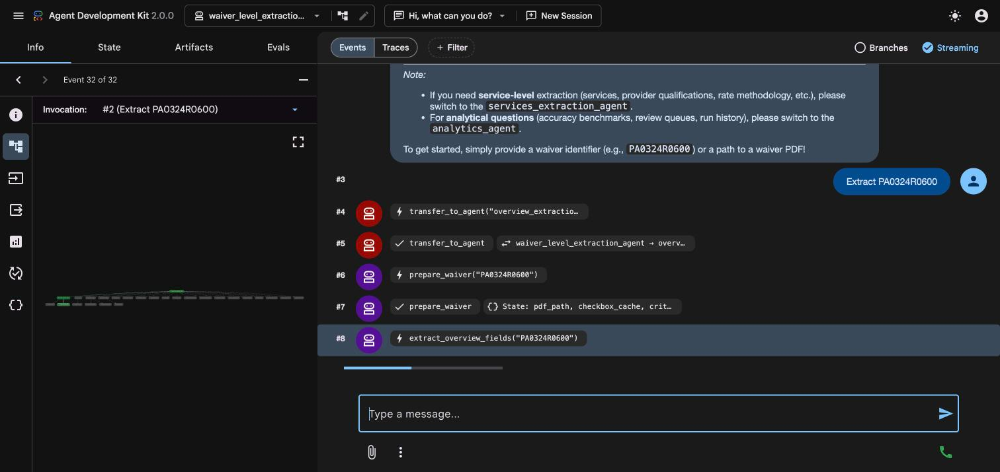
Seconds after sending the request: the tool has handed over to the extraction specialist and is working through its steps.
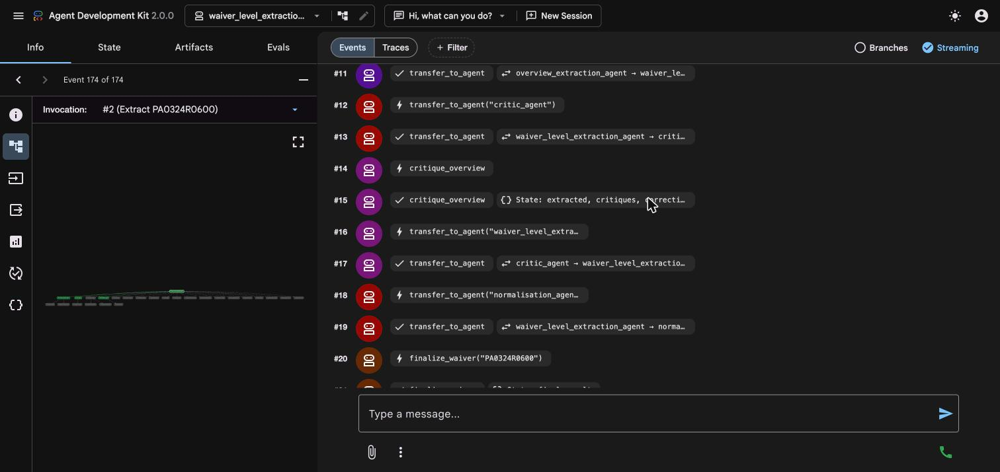
Later in the same run: the critic, normalisation and finalising steps.
If it seems stuckA full extraction of the 125-page test waiver took about 6 minutes, and a moving progress bar means the tool is still working. If a run stops part-way, type resume: the tool picks up where it left off instead of redoing everything. If nothing has appeared after several minutes, look at the terminal log (see section 12).
6.3 The summary and the first page of results
When the run finishes, the tool prints a short summary, then the first page of the review table (Figure 9).
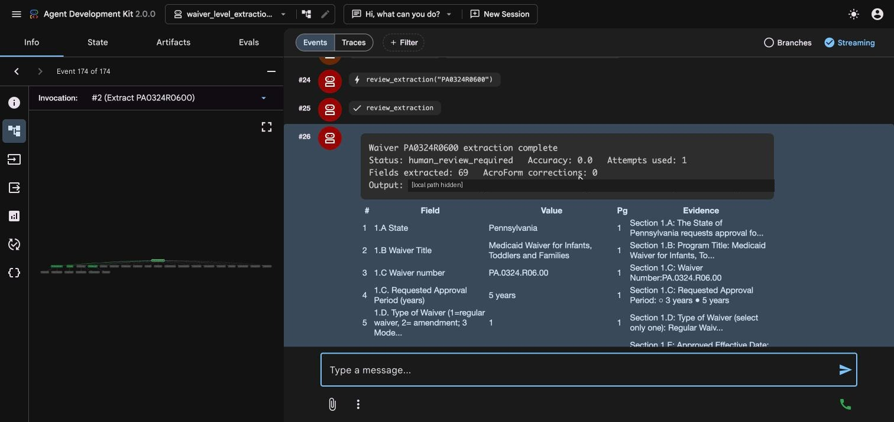
The summary box and the start of the review table.
In the summary box:
Status: human_review_required means a person needs to check the result. This is the normal outcome.
Fields extracted is how many of the 163 fields have a value (69 for this waiver).
Accuracy and AcroForm corrections come from the automatic checker, which compares the answers with the PDF's own form data (AcroForm). This test waiver has no form data, so there was nothing to verify against and Accuracy shows 0.0 (0%) with 0 corrections. For a PDF like this, judge each result by its quoted evidence.
Output is the folder where the result files were written.
7. Review and correct the results
7.1 How to read the review table
Column
Meaning
#
The field's position among all 163 fields. The number never changes, even when you filter, so you can always refer to a field by its number.
Field
The field's name from the layout file (long names are shortened with "…").
Value
What the tool extracted. (empty) means no value was found. For yes/no fields, 1 means Yes and 0 means No.
Pg
The PDF page the answer came from.
Evidence
The wording from the PDF. For check boxes it starts with CHECKED or UNCHECKED and the box's label, so you can see exactly which box was ticked.
The table shows 50 rows at a time. Under each page the tool states how many rows are shown and how many of the 163 fields are filled and empty. For the test waiver: 69 filled and 94 empty. Many empty fields are normal. For example, if the waiver does not serve a population, its age range fields are empty and the evidence says so.
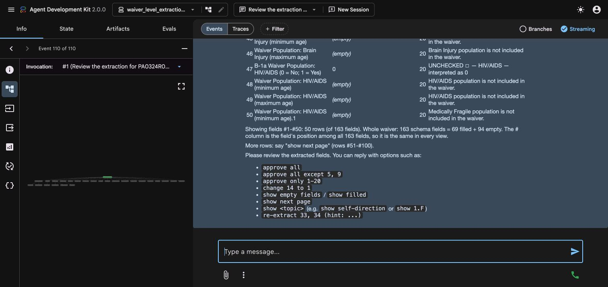
The bottom of page 1 of the table (rows 1 to 50), the totals line, and the list of commands you can type next.
7.2 Commands you can type
Type this
What happens
show next page
Shows the next 50 rows.
search participant direction
Shows only fields that match your words. You can also search by section number, such as search 1.F.
show empty fields / show filled fields / show all
Filters the table.
change 14 to 1
Replaces the value of field #14 with 1.
reject 5
Blanks field #5 so it is saved as empty.
re-extract 5
Reads the PDF again for field #5 (section 7.8).
approve all
Accepts everything as shown and saves it.
approve all except 5, 9 / approve only 1-20
Accepts only part of the table.
Saving happens straight awayapprove all, change and reject each write the results CSV immediately. A change or reject keeps every other field as it was extracted, so after one of these commands the rest of the table has also been saved. Before every overwrite, the previous CSV is copied to data/csv_backups/, so nothing is lost.
7.3 Moving through the table
show next page shows rows 51 to 100 (Figure 11). Keep typing it to reach rows 101 to 150 and 151 to 163.
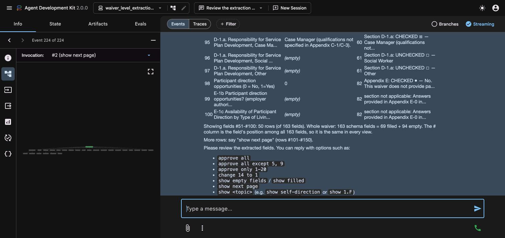
Page 2 of the table, rows 51 to 100.
Each row's evidence helps you check the value. In Figure 12, the middle of page 1 shows check-box fields with their CHECKED / UNCHECKED evidence.
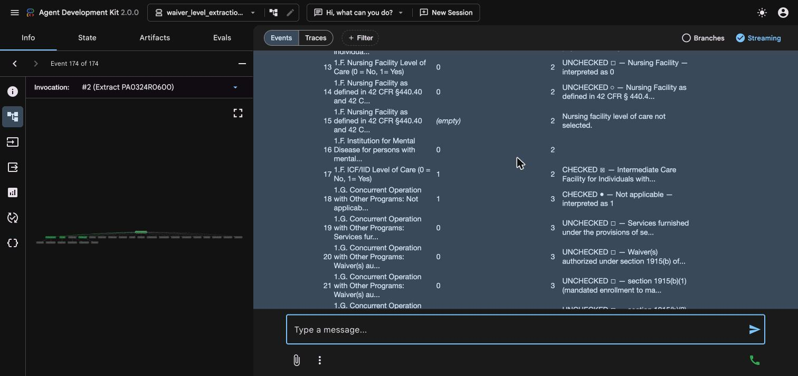
The middle of page 1: values, page numbers and evidence for rows 13 to 33.
7.4 Searching
Type search participant direction. The tool shows only matching fields, here 17 of them, numbered by their position among all 163 (Figure 13).
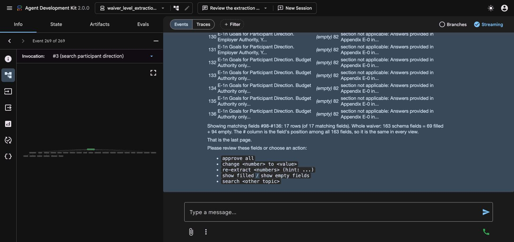
Search results: 17 matching fields, and the command list for what to do next.
7.5 Showing only the empty fields
Type show empty fields to see the 94 empty fields (Figure 14). This is the quickest way to check whether the tool missed anything that the PDF actually contains.
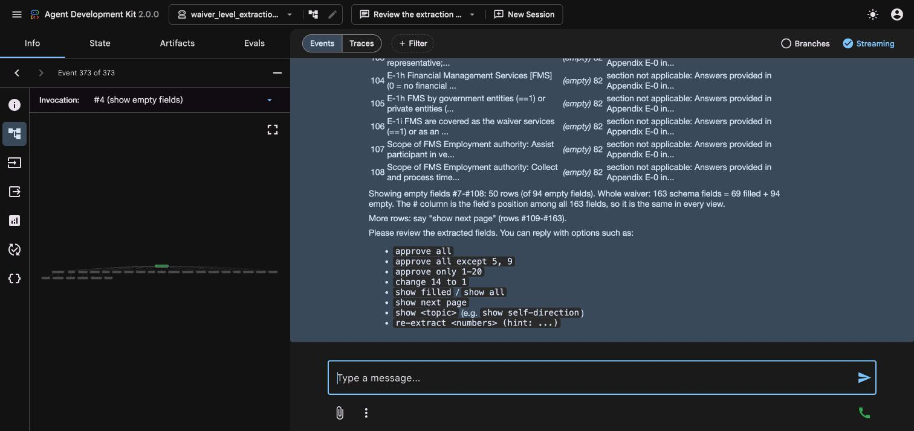
Empty fields only. The numbers still refer to each field's place among all 163.
7.6 Changing a value
If a value is wrong and you know the right one, type change 14 to 1. The tool confirms what it edited (Figure 15), saves the updated result, writes the CSV, and backs up the previous files.
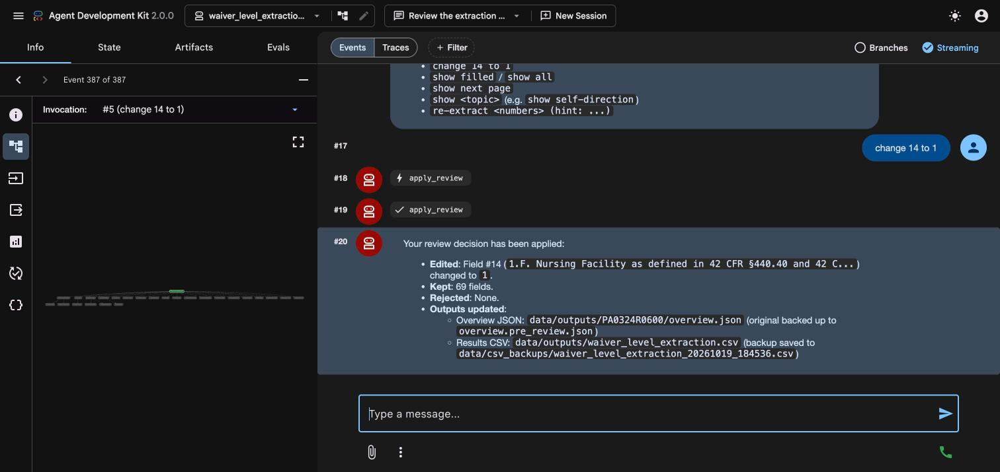
A change applied. The original extraction is kept as overview.pre_review.json, and the old CSV is backed up.
To undo a change, change the value back (for example change 14 to 0). Each change creates a new backup.
7.7 Rejecting a value
If a value should not be used at all, type reject 5. The field is blanked and saved as empty (Figure 16).
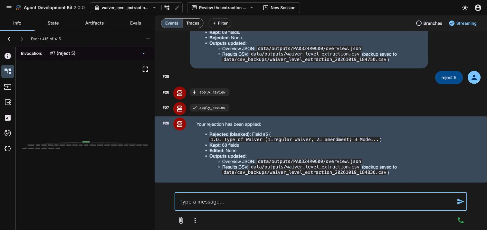
A rejection applied: field 5 is blanked and 68 fields are kept.
7.8 Re-extracting a field with a hint
When you think the tool missed something, tell it where to look: re-extract 5 (hint: Section 1.D, check which box is marked). The job goes to the re-extraction specialist, which reads the PDF again, and the tool shows the new answer with its evidence (Figure 17). It takes a minute or two.
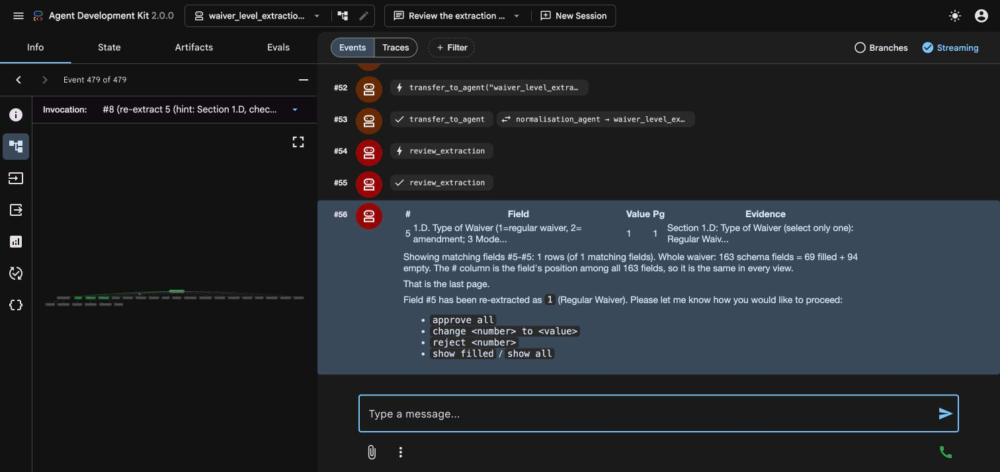
Field 5 re-extracted: 1 (Regular Waiver), with page 1 evidence.
You can add a hint to any re-extraction or retry, including for custom values (chapter 8). It is used only for that one attempt. After a re-extraction, check the new value and then approve, change or reject it.
7.9 Approving and saving
When you are satisfied, type approve all. The tool saves the waiver's row to the results CSV (Figure 18).
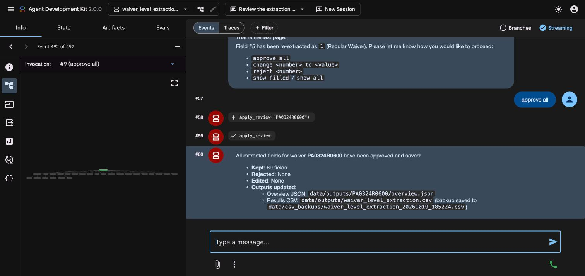
Everything approved and saved to data/outputs/waiver_level_extraction.csv, with a backup of the previous file.
The CSV holds one row per waiver. Approving the same waiver again replaces its row and leaves other waivers' rows untouched.
8. Extract a custom value
Sometimes you need something that is not one of the 163 standard fields, for example the name of the case management agency. The custom value feature extracts one such value from the PDF, shows you the evidence, and saves it separately. It never changes the standard results.
8.1 Ask for it
Type, for example, Extract the case management agency name from PA0324R0600. The tool first checks whether one of the 163 standard fields already covers it. If one does, it shows that row and asks whether you want it instead.
8.2 Confirm what you are asking for
If the value is new, the tool shows a confirmation card (Figure 19) with its understanding of the request:
Name, Meaning and Usually contains: what the value is and what it normally looks like.
Type: text, number, yes/no (1 or 0), date or list.
Where to look: the appendix or section to start in.
Allowed values: a fixed list of answers, if there is one.
The rule that nothing is guessed: if the PDF does not say it, the value is left blank.
The tool fills in a suggestion for anything you did not say. If the card is wrong, tell the tool what to change in plain words (for example "the meaning should be the agency named in Appendix A"). You can also say "you decide" and let the tool propose sensible defaults. When the card is right, type yes.
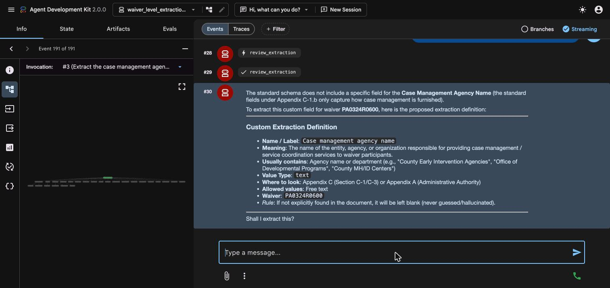
The confirmation card. Nothing is extracted until you answer yes.
8.3 The extraction
After yes, the tool makes one model call (usually 20 to 30 seconds) (Figure 20).
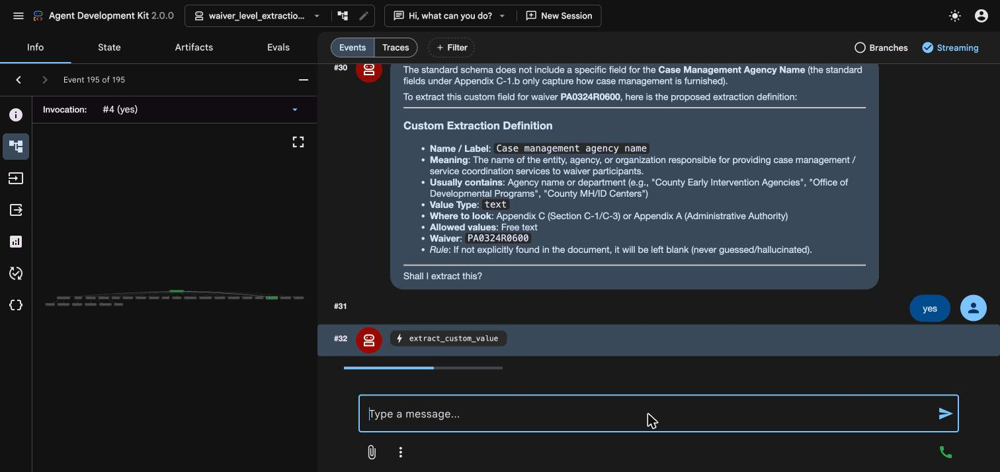
The extract_custom_value step running.
8.4 Read the result
The result shows (Figures 21 and 22):
the value and the page it was found on;
the evidence: the exact wording from the PDF;
the confidence and any notes;
other occurrences: if the same item appears elsewhere with a different value, the others are listed with their pages;
four choices: approve, change to <value>, retry and reject.
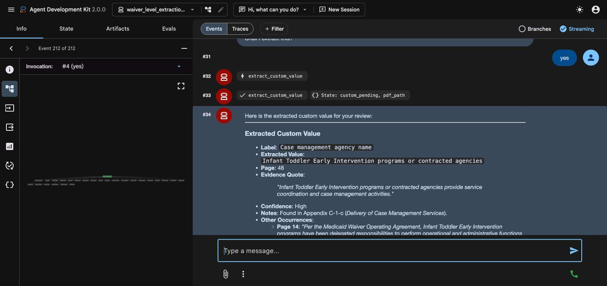
The extracted value, page and evidence quote.
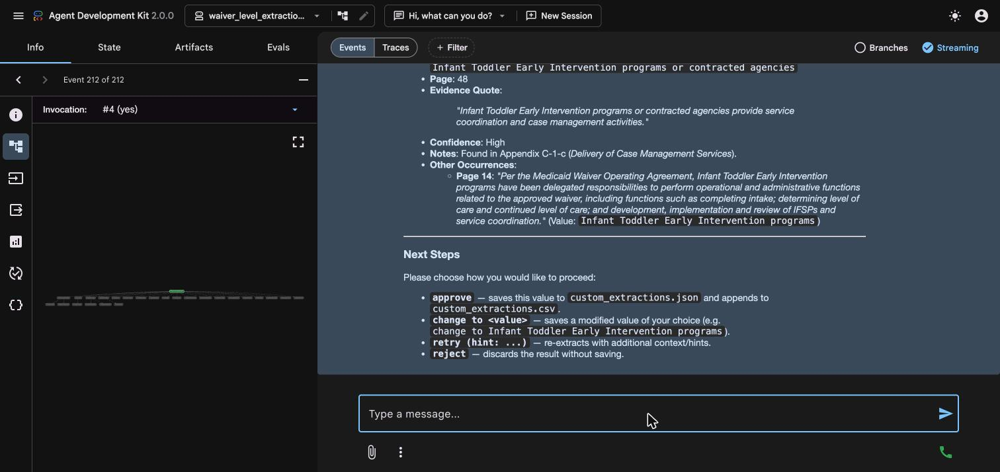
The notes, other occurrences on other pages, and the four choices.
Always check the evidenceIn the test, the PDF named no specific agency: it said that local Infant Toddler Early Intervention programs "or contracted agencies" provide case management. The extracted value reflected that wording. When a document does not name a single answer, the honest answer is the wording the document uses, and the notes say so.
8.5 Your four choices
Type
What happens
approve
Saves the value to the waiver's custom_extractions.json and adds one row to data/outputs/custom_extractions.csv.
change to <your value>
Saves the value you typed instead of the extracted one.
retry
Runs the extraction again for this value.
reject
Discards the result. Nothing is saved.
8.6 Approving and where it is saved
Type approve. The tool reports both files it wrote (Figure 23).
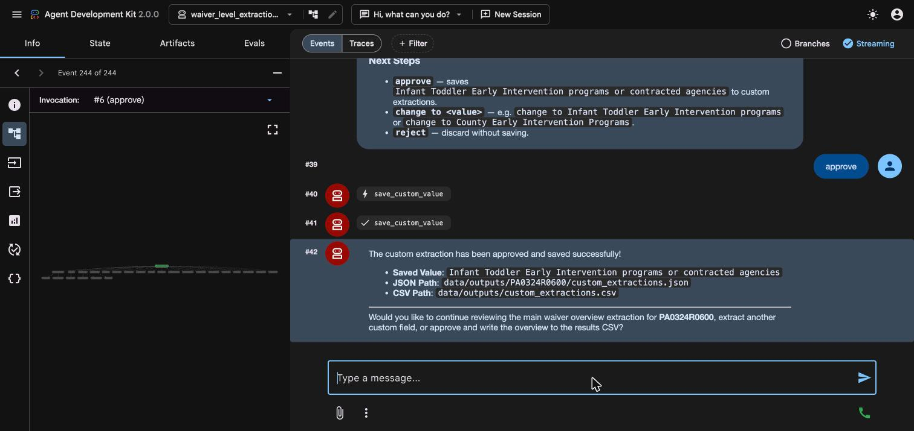
An approved custom value saved to the waiver's JSON file and to the custom values CSV.
Each row in custom_extractions.csv has these columns: waiver_key, label, value, page, evidence, confidence, description, value_type, model, extracted_at and approved_at. Saving the same label for the same waiver again replaces that row.
9. Pipeline mode (command line)
Pipeline mode runs the same extraction without the chat window. You type a command in the terminal and it processes one waiver, or a whole folder of waivers, one after another.
No review step, and it costs creditsPipeline mode does not stop for your approval: results are written straight to the files. It calls the Gemini model many times per waiver and is billed to your Google Cloud project, so a large batch can use a lot of credits. Start with one waiver, or with --limit 2, and check the results and your billing before running a batch.
9.1 Before you run a command
Open a terminal in the project root and activate the environment (section 3.2). The same .env settings are used. If the project settings are wrong, the command stops at once with a message saying what to fix.
9.2 Commands
Command
What it does
python run_pipeline.py --waiver PA0324R0600
Extracts one waiver by its key. The PDF is looked up in the default folder (data/pdfs_267_latest) or in the folder given with --dir.
python run_pipeline.py --file /path/to/waiver.pdf
Extracts one PDF from any location.
python run_pipeline.py --dir /path/to/folder
Extracts every PDF in a folder (by default only the highest version of each waiver).
python run_pipeline.py --limit 2
Stops after 2 PDFs. Use it to test.
python run_pipeline.py --limit 10 --diverse
Picks PDFs from different states (use with --limit).
--all-versions
Also processes older versions of a waiver, not only the highest one.
--max-pages 500
Skips PDFs longer than this many pages (the default is 1000).
--reprocess
Runs PDFs again even if they were already done. Without it, already-processed PDFs are skipped.
--output-csv my_run.csv
Writes the results to this CSV instead of the default. A bare file name is placed in data/outputs/.
You can combine options in one command. Section 9.3 shows how to read one.
9.3 Reading a command in plain English
A pipeline command is several small instructions typed on one line. Each part that starts with two dashes (--) is an option that changes what the program does. Here is one command, taken apart:
"Run the extraction program." Every pipeline command starts this way.
--dir ~/Desktop/new_pdfs
"Take the waiver PDFs from this folder." Here the folder is called new_pdfs and sits on your Desktop. The ~ is shorthand for your own home folder, so ~/Desktop/new_pdfs means the new_pdfs folder on your Desktop. Without this option the program uses data/pdfs_267_latest inside the project.
--output-csv my_run.csv
"Save the results in a spreadsheet file called my_run.csv." A file name with no folder is placed in data/outputs/. Without this option the results go to the default file, data/outputs/waiver_level_extraction.csv.
Put together, it says:"Run the extraction on every waiver PDF in the new_pdfs folder on my Desktop, one after another, and save the results in data/outputs/my_run.csv instead of the usual results file."
Two things the command does not say, because they are the defaults: if a folder holds several versions of the same waiver, only the highest version is processed, and a PDF that was already processed earlier is skipped. Add --all-versions or --reprocess to change either. You can add or remove options to build your own command; the order of the options does not matter.
9.4 Results
Pipeline results go to the same places as in ADK mode (section 10): the waiver's folder in data/outputs/, the results CSV, and the log in data/logs/. The export step only adds a waiver that is not yet in the CSV. A waiver already in the CSV is not added again, even if you extract it again with --reprocess, so its row keeps the old values. To replace the row, run the export script with the --force option:
You can also review and approve the waiver in ADK mode, or use --output-csv to write to a fresh file.
9.5 Service-level extraction
Service-level data has its own command, run_services_pipeline.py, and its own guide.
10. Where your files are saved
All paths are inside the project folder.
File or folder
What it holds
data/outputs/waiver_level_extraction.csv
The approved waiver-level results. One row per waiver, 163 field columns plus waiver_key. Created (with just the header row) as soon as the app starts.
data/outputs/custom_extractions.csv
Approved custom values, one row per waiver and label.
data/outputs/<KEY>/overview.json
The waiver's current approved extraction, with evidence.
data/outputs/<KEY>/overview.pre_review.json
The extraction as it was before your first change or rejection.
data/outputs/<KEY>/custom_extractions.json
Custom values for this waiver, with notes and other occurrences.
data/csv_backups/
A copy of the CSV taken before every overwrite.
data/logs/<KEY>.jsonl
A step-by-step log of each run for that waiver.
data/stages/<KEY>/
Saved progress after each stage, so an interrupted run can be resumed.
Choosing a different results fileBy default results go to the files above. To write to a different CSV file, ask the tool to use that file name when it saves. A bare file name is placed in data/outputs/. (This option is described in the project README and was not exercised for this guide.)
11. Good habits
One waiver per session. Click New Session before starting another waiver.
Review the empty fields. Use show empty fields to catch anything missed.
Check the evidence, not just the value. Read the quoted wording and page number, especially for check boxes.
Remember that change and reject save immediately. Do your corrections, then finish with approve all so you know the final state is saved.
Wait for the progress bar. Do not resend a request while the tool is still working.
Watch your Google Cloud spending (section 2.2).
Never share your .env file or screenshots that show file paths you do not want shared.
12. Troubleshooting
What you see
What to do
The terminal says "Google Cloud project is not set", or PROJECT_ID and GOOGLE_CLOUD_PROJECT differ, and the app will not load
Open waiver_level_extraction_agent/.env. Set both PROJECT_ID and GOOGLE_CLOUD_PROJECT to your project ID (3.7). Also check that no old value is set in your shell: type echo $PROJECT_ID $GOOGLE_CLOUD_PROJECT. Restart adk web.
A permission error (403) or "billing" error from Google
Check that billing is enabled for the project and that the Vertex AI API is on (3.6). Re-run gcloud auth application-default login and make sure you signed in with an account that has access to that project.
A "quota", "resource exhausted" or 429 error
Google is limiting how fast you can make requests. Wait a few minutes and try again.
Nothing appears for a long time after you press Enter
The first request after starting the app can take around 2 to 3 minutes. Look at the terminal: new lines mean it is still working. Look at the Traces view for the latest step. If there has been no activity for more than 10 minutes, stop the app (Ctrl+C), start it again, and ask the tool to resume (see below).
The run stopped part-way
Progress is saved after each stage in data/stages/<KEY>/. Restart the app, open a new session and ask the tool to resume that waiver from its last saved stage rather than starting over.
"PDF not found"
Check the waiver key spelling, put the PDF in data/pdfs_267_latest/, or give the full path to the file.
The terminal shows chroma_error in a log line
This is a non-fatal message from the optional search index. Your extraction and CSV are not affected.
The app list contains "data"
It is only a folder. Choose waiver_level_extraction_agent.
The page will not open at all
Make sure the terminal running adk web is still open, and that the address is exactly http://127.0.0.1:8000. If port 8000 is in use, start with another port, for example adk web . --port 8001.
13. Quick reference
13.1 Setup commands (once)
git clone <repository-url> 1915c_extraction_agent && cd 1915c_extraction_agent
python3 -m venv .venv && source .venv/bin/activate
pip install -r waiver_level_extraction_agent/requirements.txt
brew install poppler # or: sudo apt install poppler-utils
gcloud auth application-default login
cp waiver_level_extraction_agent/.env.example waiver_level_extraction_agent/.env
# edit .env: set PROJECT_ID and GOOGLE_CLOUD_PROJECT to your project ID
13.2 Each time you work
cd 1915c_extraction_agent
source .venv/bin/activate
adk web . --port 8000
# open http://127.0.0.1:8000 and choose waiver_level_extraction_agent
13.3 Chat commands
Type
Purpose
Extract <WAIVER KEY>
Run a full extraction.
Review the extraction for <WAIVER KEY>
Reopen the review table for a waiver already extracted.
show next page, show empty fields, show filled fields, show all
Move through and filter the table.
search <words>
Find fields by topic or section number.
change <#> to <value>
Correct a value (saves immediately).
reject <#>
Blank a value (saves immediately).
re-extract <#>
Read the PDF again for a field.
approve all, approve all except <#s>, approve only <range>
Save the results.
Extract the <something> from <WAIVER KEY>
Start a custom value.
yes, approve, change to <value>, retry, reject
Answer the custom value prompts.
These are recommended phrasings. You can also just chat with the tool in your own words.
Appendix A. The .env settings
Setting
Meaning
PROJECT_ID
Your Google Cloud project ID. Change this. Used by the batch scripts.
GOOGLE_CLOUD_PROJECT
Your Google Cloud project ID. Change this. Used by the ADK web app. Must equal PROJECT_ID.
GOOGLE_GENAI_USE_VERTEXAI
Leave as TRUE. Tells the tool to use Google Cloud's Vertex AI.
LOCATION
The Google Cloud region. Leave as us-central1. (The Gemini 3.7 model used by the ADK app is automatically sent to Google's global endpoint.)
CACHE_GCS_BUCKET (optional)
A Cloud Storage bucket used to cache large PDFs in the services pipeline. If not set, a bucket named <PROJECT_ID>-waiver-pdf-cache is created on first use, which needs permission to create buckets.
PDF_DIR, OUTPUT_DIR, LOG_DIR
Folders for source PDFs, results and logs, relative to the project root. Leave as they are unless you have a reason to move them.
Appendix B. Google documentation and credits
REMINDER: THESE TOOLS NEED CREDITS OR AN ACTIVE BILLING ACCOUNT.Google charges for the model calls this tool makes. Enable billing or check your free credits before running, and watch your spend.
The Google Cloud console screenshots and the exact click paths are in Google's own documentation, which stays up to date with the console's layout:
Finding your project ID: "View and update projects", Resource Manager, docs.cloud.google.com/resource-manager/docs/view-update-projects
Creating a project: "Create projects", docs.cloud.google.com/resource-manager/docs/creating-managing-projects
Signing in for local use (ADC): "Set up ADC for a local development environment", docs.cloud.google.com/docs/authentication/set-up-adc-local-dev-environment
Project, billing and API setup for Vertex AI: "Set up a project and a development environment", docs.cloud.google.com/vertex-ai/docs/start/cloud-environment
Billing questions for Vertex AI: docs.cloud.google.com/vertex-ai/docs/support/billing-questions
Current model prices: cloud.google.com/vertex-ai/pricing
Installing the gcloud CLI: cloud.google.com/sdk/docs/install
Google, Google Cloud, Vertex AI and Gemini are trademarks of Google LLC. Page layouts and product names in Google's documentation may change; use the current version of those pages.
Appendix C. Glossary
Term
Meaning
1915(c) waiver
A Medicaid program that pays for home and community-based services as an alternative to institutional care.
Waiver key
The identifier of one waiver application, such as PA0324R0600. Not the same as a Google Cloud project ID.
Project ID
The unique ID of your Google Cloud project, for example my-waiver-project-123456.
ADC (Application Default Credentials)
The way Google's tools find your sign-in on your computer, set up with gcloud auth application-default login.
Vertex AI
Google Cloud's service for running AI models, including Gemini.
ADK (Agent Development Kit)
The framework that provides the chat window and runs the tool's steps.
Layout file
The file that lists the 163 fields to extract, with a short description of each.
Evidence
The exact wording from the PDF, with its page number, that an answer is based on.
Session
One conversation in the chat window. Start a new one with New Session.
Appendix D. Tested with
Operating system
macOS (not tested on Windows)
Python
3.12
Google ADK
2.0.0
Model
Gemini 3.7 Flash (through Vertex AI)
Browser
Google Chrome
Waiver used in screenshots
PA0324R0600 (Pennsylvania, Medicaid Waiver for Infants, Toddlers and Families), 125 pages
Windows and Linux commands are given for convenience but were not run for this guide. Pipeline mode was documented from its help text and was not run for this guide.
Appendix E. Setting up with an AI assistant
If you already use an AI assistant, it can take the project from a fresh download to a working app on your computer. A coding assistant that can run commands (one that works in a terminal or an editor, with your permission) can do almost all of section 3 itself: download the project, create the Python environment, install the packages and tools, create the .env file, and start the app.
E.1 Who does what
The assistant can do
Only you can do (the Google and Gemini side)
Download the project (git clone) Check Python, create .venv Install the packages, poppler and the gcloud CLI Create .env and fill in your project ID Check the settings and start adk web
Create or choose the Google Cloud project Turn on billing, or confirm you have credits Turn on the Vertex AI API (or ask the assistant to run the command) Complete the gcloud auth application-default login sign-in in the browser Copy the project ID and give it to the assistant
A good assistant stops at each of those steps on the right, tells you exactly what to do, and waits. It should never start an extraction, because that calls the Gemini model and is billed to your project.
E.2 The prompt
Open the project folder in your assistant (or an empty folder, if it will download the project for you), then paste the text below. Replace the text in [square brackets] first. The same prompt is in the SETUP file in the project folder.
E.3 What a successful setup looks like
The assistant reports config ok and sign-in ok.
The terminal shows Uvicorn running on http://127.0.0.1:8000.
When you open http://127.0.0.1:8000 and click Select an app, waiver_level_extraction_agent is in the list (Figure 2).
No extraction has been run and no money has been spent yet.
Read what the assistant doesAn assistant can make mistakes or misread an error. Read each command before you approve it. Do the Google sign-in and billing steps yourself. Do not paste passwords, keys or tokens into a chat, and do not let it upload your .env file anywhere.
If your assistant cannot run commands (a plain chat window), the prompt tells it to give you the commands one at a time and wait for your pasted output, so you can still follow along.